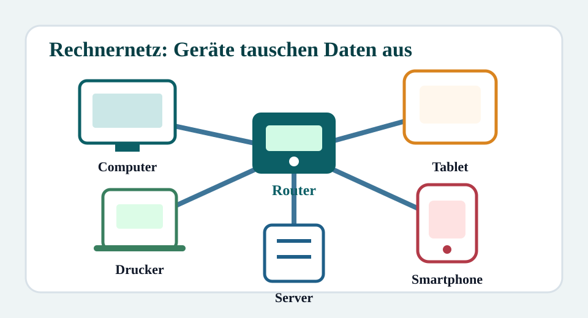
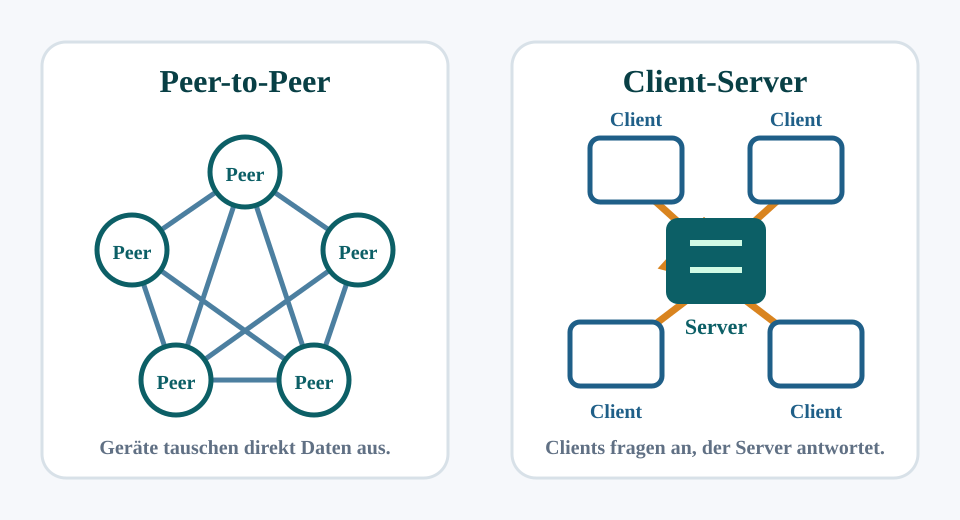
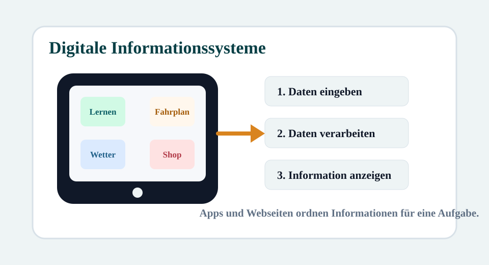
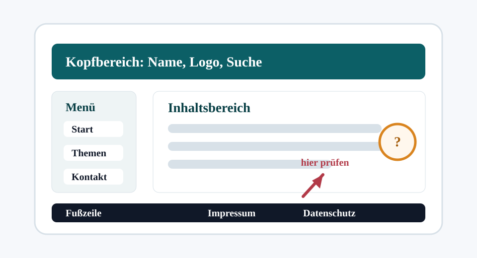
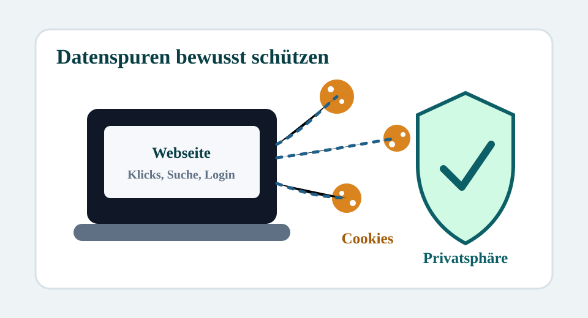
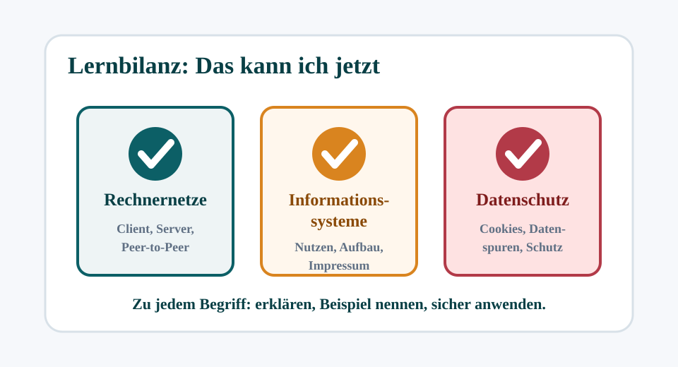

6 Unterrichtsstunden à 40 Minuten
Die Reihe folgt dem Schulbuchkapitel zu Rechnernetzen, digitalen Informationssystemen und Datenschutz. Jede Stunde enthält Informationstexte, Bilder, Wortspeicher, Arbeitsauftrag und Kontrollfragen.
Noch keine Stunde geschafft Der Fortschritt wird nur auf diesem Gerät gespeichert.

Stunde 1Noch offenWas sind Rechnernetze?
Verbindungen, Austausch, LAN, WLAN und Internet.

Stunde 2Noch offenKommunikation in Rechnernetzen
Peer-to-Peer, Client-Server und Anfrage-Antwort-Prinzip.

Stunde 3Noch offenDigitale Informationssysteme
Beispiele, Möglichkeiten, Nutzen und Checkliste.

Stunde 4Noch offenAufbau und Informationen über Systeme
Navigation, Menü, Impressum, Anbieter und Vertrauenscheck.

Stunde 5Noch offenDatenschutz und Cookies im Netz
Datenspuren, Cookie-Banner, Privatsphäre und Einstellungen.

Stunde 6Noch offenLernbilanz und Probevorbereitung
Wiederholen, Begriffe sichern und Fallbeispiele prüfen.